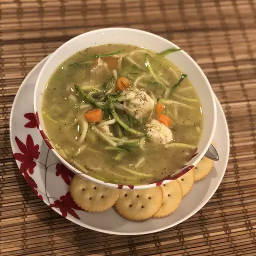

Chicken Zoodle Soup

Description
With the winter months approaching we co-conspired to
come up with this warm and comforting soup using 'zoodles' that's easy on the waistline.
Ingridients
- 2 tablespoons olive oil
- 1 cup diced celery
- 3 cloves garlic, minced
- 5 cans low sodium chicken broth
- 1 cup sliced carrots
- 3/4 pound cooked chicken breast
- 1/2 teaspoon dried basil
- 1/2 teaspoon dried oregano
- salt and ground black pepper to taste
- 3 zucchini squash, cut into noodles using a spiral slicer
Steps
- Heat olive oil in a large pot over medium-high heat. S
aute onion, celery, and garlic in hot oil until just tender, about 5 minutes.
- Pour chicken broth into the pot; add carrots, chicken, basil, oregano, thyme, salt,
and pepper. Bring the broth to a boil, reduce heat to medium-low, a
nd simmer mixture until the vegetables are tender, about 20 minutes.
- Divide zucchini 'noodles' between six soup bowls; ladle broth mixture over the 'noodles.'